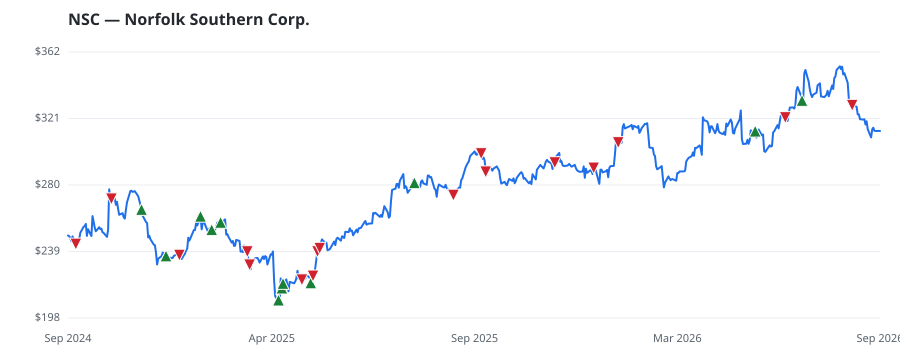

bullish · bearish · n/a — dots: price>SMA10 · SMA10>SMA50 · SMA50>SMA200 · up>down volume (20d)
Transportation · large cap · ★ 2 buyer(s) sit on a committee that regulates this industry
Members who bought NSC earned a dollar-weighted +13.2% from their disclosure dates, versus +14.4% for the S&P 500 over the same holding windows (-1.2% alpha).

▲ green = a disclosed purchase · ▼ red = a disclosed sale (plotted on disclosure date)
Class I railroad Norfolk Southern operates in the Eastern United States. On more than 20,000 miles of track, the rail hauls shipments of coal, intermodal traffic, and a diverse mix of automotive, agricultural, metal, chemical, and forest products. RAILROADS, LINE-HAUL OPERATING · website
| Revenue | $12.2B | Net income | $2.9B |
|---|---|---|---|
| Operating income | $4.4B | Diluted EPS | $12.75 |
| Assets | $45.2B | Equity | $15.5B |
| Member | Chamber | Out-performer | Disclosed buys $ | Return on buys |
|---|---|---|---|---|
| Rohit Khanna | house | — | $56K | +2.8% |
| Marjorie Taylor Greene ★ | house | yes | $48K | +35.4% |
| Jefferson Shreve ★ | house | — | $32K | +2.6% |
| Alan Armstrong | senate | — | $8K | -5.5% |
Disclosed $ figures are bracket midpoints — filings report ranges (e.g. $1,001–$15,000), not exact amounts.
🛒 Newly buying: Nearwater Capital Markets, Ltd (+11%, 0.8% of book)
Showing the 15 largest positions among 17 ranked-fund holders.
| Fund | Fund alpha vs SPY | Position | % of book |
|---|---|---|---|
| Nearwater Capital Markets, Ltd | +11% | $47M | 0.8% |
| Cherokee Insurance Co | +7% | $6M | 2.1% |
| Old West Investment Management, LLC | +33% | $5M | 0.5% |
| DELTA CAPITAL MANAGEMENT LLC | +3% | $3M | 1.5% |
| Cache Advisors, LLC | +7% | $2M | 0.2% |
| SS&H Financial Advisors, Inc. | +4% | $2M | 0.4% |
| CSU Producer Resources, Inc. | +7% | $2M | 5.6% |
| Werlinich Asset Management, LLC | +15% | $1M | 0.5% |
| TRUSTCO BANK CORP N Y | +10% | $1M | 0.8% |
| Mine & Arao Wealth Creation & Management, LLC. | +4% | $1M | 0.3% |
| PFC CAPITAL GROUP, INC. | +1% | $0M | 0.2% |
| bLong Financial, LLC | +20% | $0M | 0.2% |
| Grandview Asset Management LLC | +19% | $0M | 0.1% |
| Cornerstone Select Advisors, LLC | +28% | $0M | 0.1% |
| Plotkin Financial Advisors, LLC | +3% | $0M | 0.1% |
Hedge data: SEC EDGAR 13F · ranked funds beat SPY in >50% of their quarters · fund alpha = mirror-portfolio return minus SPY.